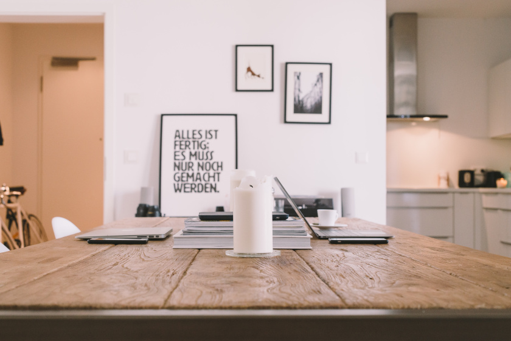

Pencils create marks by physical abrasion, leaving behind a trail of solid core material that adheres to a sheet of paper or other surface. They are distinct from pens, which instead disperse a trail of liquid or gel ink that stains the light colour of the paper.
Continue reading→